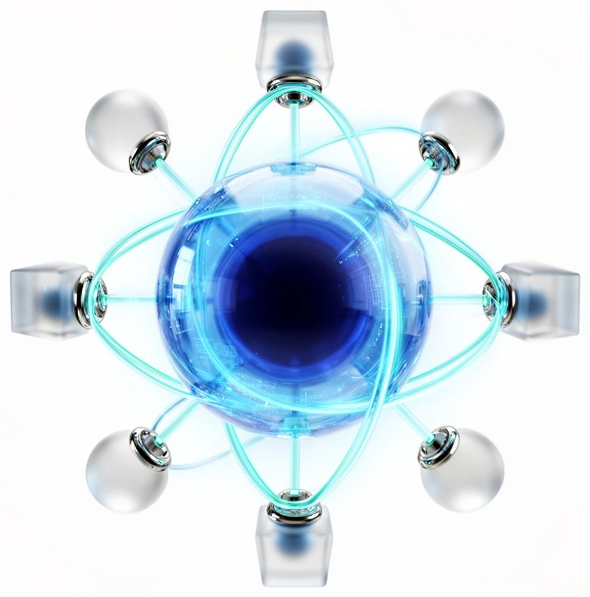
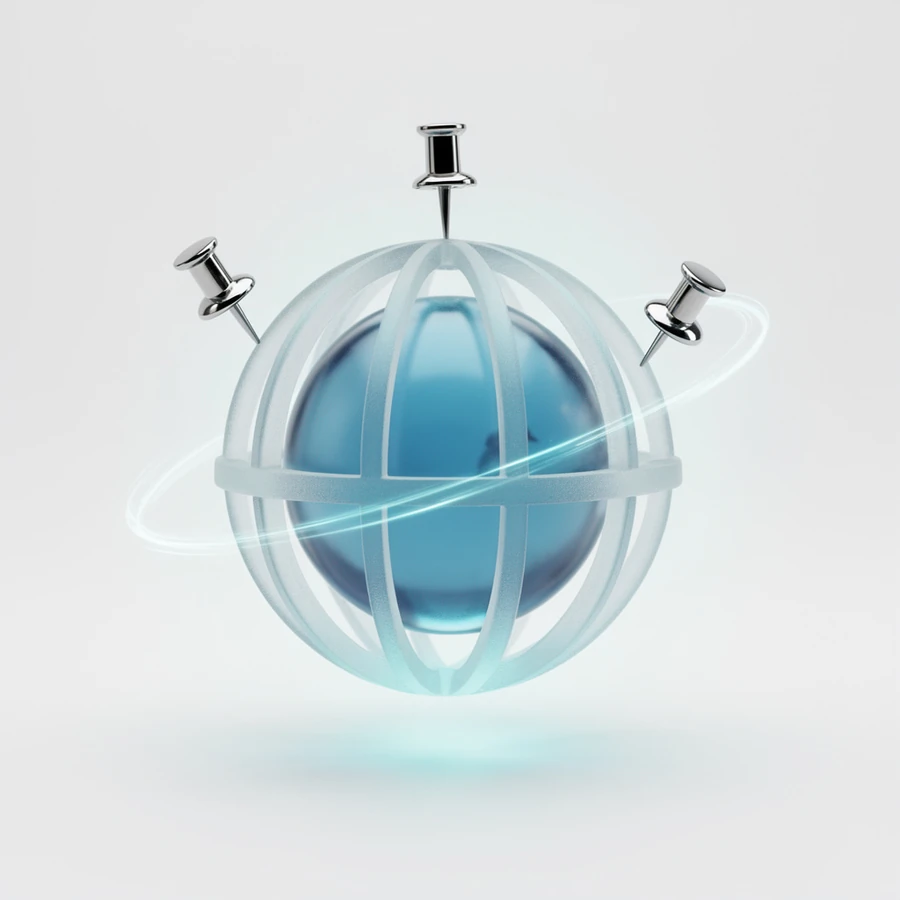

تولید محتوا با ۲۱ پرووایدر هوش مصنوعی
OpenAI، Claude، Gemini، Groq، DeepSeek، Qwen، GLM، AvalAI و… — مدل را انتخاب کنید یا اجازه دهید افزونه بهترین مدل را برای هر کار انتخاب کند.
۴۹ قابلیت پرووایدرکلید چندگانهمدل پیشفرض هر بخش
ARIAGH.AIWRITER موضوع را میگیرد، با هوش مصنوعی مقالهٔ فارسی مینویسد، سئو را کامل میکند، تصویر شاخص میسازد، لینک داخلی میزند و بدون دخالت شما در وردپرس منتشر میکند.

کلید API خودتان؛ بدون واسطه، بدون هزینهٔ اضافه.

۵۰۰ قابلیت در ۱۷ گروه — از انتخاب موضوع تا انتشار نهایی، همه در یک پیشخوان.
OpenAI، Claude، Gemini، Groq، DeepSeek، Qwen، GLM، AvalAI و… — مدل را انتخاب کنید یا اجازه دهید افزونه بهترین مدل را برای هر کار انتخاب کند.
تحلیل کلمهٔ کلیدی، ساختار هدینگ، چگالی، متا، اسکیما، لینک داخلی و خارجی، سرعت خواندن و امتیاز نهایی برای هر مقاله.

فارسی، انگلیسی، عربی و… با لحن رسمی، صمیمی، آموزشی یا تبلیغاتی.
اصلاح نیمفاصله، ی/ک عربی، اعداد و علائم — متن تمیز و آمادهٔ انتشار.
تصویر شاخص تولید میشود، بهینه و با متن جایگزین فارسی ذخیره میشود.
افزونه مقالات مرتبط خودتان را میشناسد و لینک داخلی طبیعی و مرتبط در متن میگذارد — بدون لینک بیربط.
دستهبندی موضوعات آماده برای شروع سریع، یا ساخت موضوع با کلمهٔ کلیدی، مخاطب و هدف خودتان.

هر مقاله قبل از انتشار در صف بازبینی مینشیند؛ یک نگاه، یک تأیید، انتشار.

روز و ساعت انتشار را تعیین کنید؛ افزونه در زمان مشخص مقاله را منتشر میکند.
اگر هاست محدود باشد، تولید را به کلادفلر یا GitHub Actions بسپارید. هیچکدام اجباری نیست.
ورکر کلادفلر کار تولید را انجام میدهد؛ مناسب هاستهای اشتراکی با محدودیت زمان اجرا.
با یک ریپازیتوری خصوصی، تولید در زمانبندی گیتهاب اجرا میشود.
بدون تنظیم اضافه؛ همهچیز داخل خود وردپرس اجرا میشود.
یکی از ۲۱ پرووایدر یا پرووایدر شخصی خودتان؛ کلید در دیتابیس شما میماند.

از ۴۴۶ موضوع آماده یا ساخت موضوع با کلمهٔ کلیدی و مخاطب هدف.
مقاله، متا، اسکیما، تصویر شاخص و لینکها در یک صف ساخته میشوند.
در صف بازبینی نگاه کنید، اصلاح کنید و منتشر یا زمانبندی کنید.
سه بخش اصلی دمو را ببینید یا کل پیشخوان را در دموی تعاملی امتحان کنید.
افزونه خودش سرویس هوش مصنوعی نمیفروشد؛ با کلید خودتان به ۲۱ پرووایدر وصل میشود. بعضی پرووایدرها پلن رایگان دارند و اگر روی سرور خودتان مدل محلی داشته باشید، میتوانید کاملاً بدون هزینه تولید کنید.
هر مقاله از کلمهٔ کلیدی، مخاطب و ساختار مشخص ساخته میشود، بعد از تولید ویرایش فارسی میخورد و در صف بازبینی مینشیند تا قبل از انتشار ببینید.
بله. اگر هاست محدودیت زمان اجرا داشته باشد، حالت کلادفلر یا GitHub Actions تولید را بیرون از هاست انجام میدهد و نتیجه را برمیگرداند.
افزونه از استانداردهای خود وردپرس استفاده میکند و به قالب وابسته نیست. ووکامرس و المنتور هم اگر نصب باشند، قابلیتهای بیشتری فعال میشود.
دمو یک پیشخوان تعاملی است: تبها، انتخاب پرووایدر، تولید نمونه و امتیاز سئو همه کار میکنند. فقط دادهها نمونهاند و به وردپرس واقعی وصل نیست.
پشتیبانی فارسی و بهروزرسانی از طریق همین صفحهٔ محصول؛ راهنمای نصب هم بهصورت PDF و HTML همراه بسته است.
پیشخوان تعاملی را باز کنید، یک موضوع بدهید و ببینید افزونه چه چیزی تحویل میدهد.